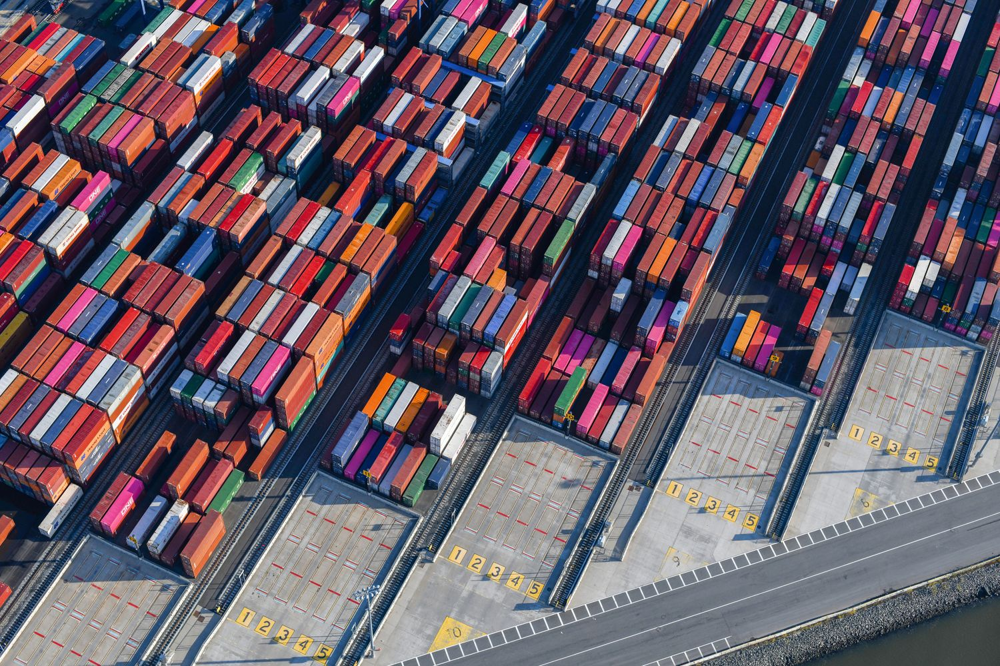

C'est une excellente nouvelle pour l'Afrique de l'Ouest : ses grands ports se modernisent, investissent et voient leur trafic progresser d'année en année. Le port d'Abidjan a vu son trafic bondir de près de 20 % en 2025, pour dépasser 34 millions de tonnes, et un grand armateur mondial vient d'en faire l'un de ses hubs continentaux. À Tema, au Ghana, comme à Lomé, au Togo, le trafic de conteneurs atteint des niveaux records.
Chaque port cultive ses forces : Abidjan sur le fret conventionnel et le transbordement, Tema et Lomé sur le conteneur. Ensemble, ils dessinent une façade maritime ouest-africaine plus performante que jamais.
Une émulation qui profite à toute la région
Cette dynamique est avant tout une bonne nouvelle pour les économies de la sous-région. Des ports plus fluides, mieux équipés et mieux desservis, ce sont des délais raccourcis, des coûts maîtrisés et des débouchés facilités — pour les importateurs, les exportateurs et, en bout de chaîne, pour les millions de personnes que ce commerce fait vivre.
Quand les ports d'Afrique de l'Ouest montent en puissance, c'est toute la région qui avance.
Les pays de l'intérieur en bénéficient tout autant : le Burkina Faso, le Niger et le Mali voient s'améliorer les corridors qui relient leurs marchandises à la mer. La saine concurrence entre les ports côtiers les incite à offrir de meilleurs services à ces économies enclavées — un cercle vertueux pour l'ensemble de l'espace régional.

Plus de trafic, plus besoin de rigueur
Cette croissance s'accompagne d'un enjeu concret : plus les volumes augmentent, plus la qualité du contrôle des marchandises devient déterminante. Cadences soutenues, manutentions rapides, cargaisons plus nombreuses : autant de raisons de veiller, à chaque étape, à ce que la marchandise soit bien celle attendue, en bon état et en bonne quantité.
💡 Une croissance portuaire qui appelle plus de vigilance
- Contrôler à l'arrivée comme au départ : quantité, qualité et état des marchandises.
- Documenter les opérations sensibles : empotage, dépotage, transbordement.
- Constater vite tout dommage ou manquant, avant que la marchandise ne circule.
- S'appuyer sur un expert de proximité, qui connaît le port et ses usages.
Le Réseau CEM, présent dans tous ces ports
C'est ici que réside la force d'un réseau régional. Le Réseau CEM est implanté à Abidjan, à Lomé, à Tema, à Cotonou, à Lagos et au-delà : dans chacun de ces ports, ses experts accompagnent les acteurs du commerce maritime — assureurs, armateurs, importateurs, industriels — avec la même exigence et une parfaite connaissance du terrain local.
Notre rôle n'est pas de choisir un port plutôt qu'un autre : il est d'être présent partout où nos clients ont besoin de nous, quel que soit le pavillon ou le quai. Cette neutralité, au service de tous, est précisément ce qui fait notre valeur depuis 1962. La belle dynamique des ports ouest-africains, nous la regardons donc avec confiance — et nous sommes heureux d'y accompagner, chaque jour, la croissance de toute la région.